地政学
サウスタラワは、広大な太平洋に点在するキリバスを統治する小さな結節点です。海面上昇、漁業権、援助外交、移住、海洋境界が、細い環礁道路と官庁の窓口に集まります。気候政治が日常の土地問題と重なる街です。今も続きます。
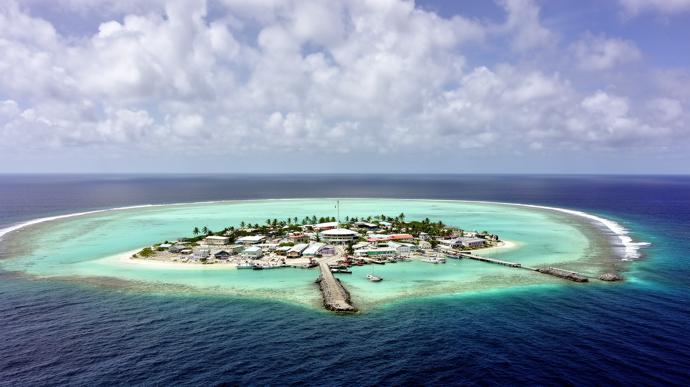
🇰🇮 キリバス / ギルバート諸島 / World City Atlas
ラグーンと外洋にはさまれた細い環礁に、政府、港、空港、学校、病院、教会、市場、過密な住宅地が連なるキリバスの首都機能の中心です。
都市の骨格
サウスタラワは一つの大きな都心ではなく、ベシオ、バイリキ、アンボ、ビケニベウ、ボンリキなどが道路と土手道で連続する環礁都市です。首都の便利さと土地の少なさが、生活密度と気候リスクを同じ場所へ集めます。
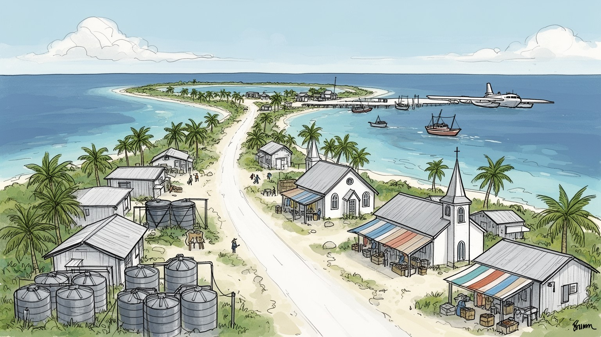
サウスタラワは、広大な太平洋に点在するキリバスを統治する小さな結節点です。海面上昇、漁業権、援助外交、移住、海洋境界が、細い環礁道路と官庁の窓口に集まります。気候政治が日常の土地問題と重なる街です。今も続きます。
政府雇用、港湾、空港、漁業、学校、医療、援助事業、小売、建設、海外送金が暮らしを支えます。土地と水が少なく、現金仕事の選択肢は限られるため、家族の支え合いと外島との関係も経済の一部になります。日々続きます。
教会、集会所、学校、歌、踊り、カヌー、親族、土地の系譜が都市の共同性を作ります。キリスト教の暦と島の儀礼は、過密な住宅地でも人を集め、困窮、葬儀、結婚、移住の相談を支える基盤になります。今も続きます。
旅行者はラグーン、戦跡、市場、教会、外島への船と飛行機をたどりますが、住民は水、廃棄物、家賃、食料価格、高潮、通学、病院、親族の土地と向き合います。観光の眺めと生活の制約が近い都市です。海も近い街です。
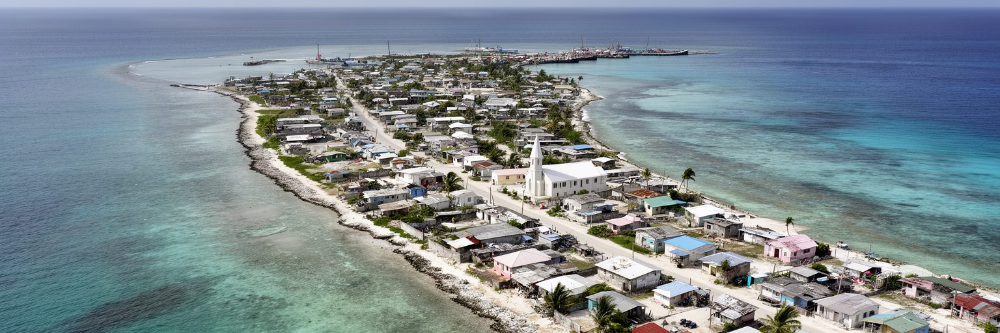
サウスタラワは、ラグーン側の穏やかな水面と外洋側の強い波にはさまれた、きわめて細い環礁都市です。ベシオ、バイリキ、アンボ、ビケニベウ、ボンリキなどの集落は土手道と一本の幹線道路でつながり、島というより長い都市廊下に近いです。場所によっては海から海までの幅が数百メートルしかなく、住宅、学校、教会、官庁、商店、墓地、水源、空港、港が限られた帯状の土地を分け合います。高層化が進みにくい一方で人口は増え、家族の敷地は細かく使われ、路地と海辺の境界も曖昧になります。都市の拡大は内陸へ逃げられないため、道路の混雑、土地紛争、排水、廃棄物、高潮への弱さが同時に現れます。サウスタラワの形を読むことは、首都の便利さがなぜ過密と危険を生むのかを読むことでもあります。ラグーンの美しさは、住民にとって遊び場であり食料の場であり、同時に汚水やごみが流れ込む生活環境でもあります。外洋側の護岸や砂浜は、景観ではなく住宅を守る境界です。一本の道路が止まれば通学、通勤、病院、港、空港がまとめて遅れます。細い陸地は、都市の選択肢を狭める一方で、海と集落の距離を極端に近くします。そこに首都の日常の強さと脆さが同居しています。道端の店、教会の庭、井戸の列、バス停の混雑は、すべて同じ細い地形の上に置かれます。地形を変えにくいからこそ、日々の管理と小さな改善が都市の命綱になります。
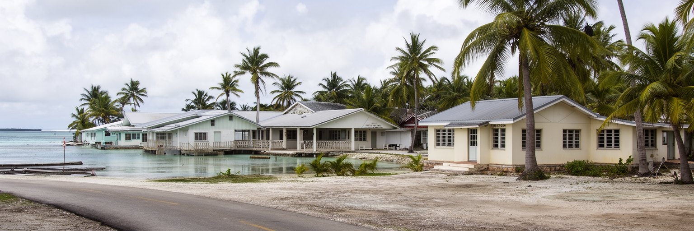
キリバスは、赤道付近の広大な太平洋に散らばる島々から成る国家であり、その統治機能の多くがサウスタラワに集中します。大統領府、議会、官庁、裁判、外交窓口、学校、病院、通信、港、空港がここにあり、外島の行政手続きや公共サービスも首都の判断と輸送に左右されやすいです。国家の領域は海洋としては広大ですが、首都の陸地は非常に小さいです。この対照がサウスタラワの政治性を作ります。漁業権、海洋境界、気候変動交渉、援助、移住政策、インフラ計画は国際会議の言葉で語られる一方、住民には水の配給、学校の混雑、道路の渋滞、土地の相続として現れます。外島から来た人は、進学、治療、就職、行政手続きのために首都へ集まり、サウスタラワは国家の窓口になります。ですが集中が進むほど、外島の人口減少や機能低下も進みやすいです。首都を強くすることは、すべてを首都へ集めることではなく、島々を結ぶ交通、通信、教育、保健を安定させることでもあります。サウスタラワの官庁街を読む時、建物の大きさよりも、海に散らばる住民がどれだけ制度へ届くかを見る必要があります。小さな首都は、広い海洋国家の不均衡を最も鋭く映しています。議会で決まる予算は、外島の船便、教員配置、診療所の薬にも関わります。首都の窓口が混むほど、遠い島で待つ時間も長くなります。国家の距離感は、船の本数と通信の安定に表れます。首都の小さな遅れが、外島では大きな不便になります。
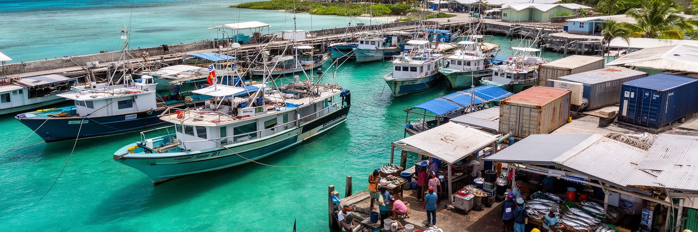
サウスタラワの経済は、ベシオ港、ボンリキ空港、漁業、政府雇用、援助事業、小売、教育、医療、海外送金が組み合わさって動きます。国全体の現金収入では、漁業権料や水産加工、外から届く援助資金の重みが大きいが、住民の日常では港での荷役、店の販売、バスやトラックの運転、修理、建設、学校と病院の仕事が生活を支えます。輸入品は遠い海上輸送に依存し、米、小麦粉、燃料、缶詰、建材、医薬品の価格は船便や為替、燃料費に左右されます。ラグーンと外洋の魚は食卓に近いが、人口密度の高い首都では沿岸資源への圧力も強いです。港は国家経済の入口であると同時に、生活費を決める場所でもあります。コンテナが遅れれば店の棚が変わり、燃料が不足すれば発電機、バス、漁船、給水にも影響します。水産業は国際市場とつながる一方、地元の漁師や市場の売り手にとっては、天候、氷、保存、移動、買い手の現金が毎日の条件になります。サウスタラワを経済都市として読むには、大きなGDPではなく、小さな島に集まる港湾機能と家計の脆さを見る必要があります。海の恵みは豊かでも、都市の生活は輸入と現金に深く依存しています。港の荷物は店先の価格になり、魚市場の売れ残りは家族の夕食になります。小さな取引の積み重ねが、首都経済の実感を作っています。外で働く親族からの送金も、学費や食費を支えます。海と海外の両方が、家計の見えない柱になっています。
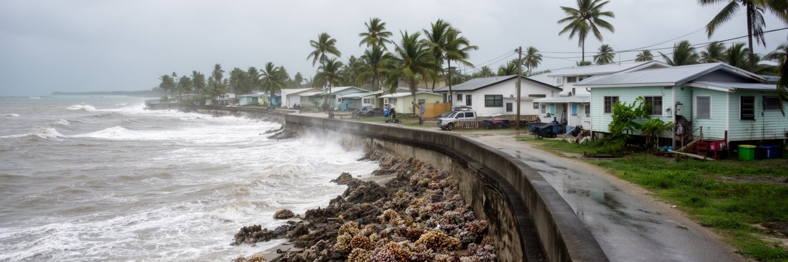
サウスタラワは気候変動を象徴する都市として世界に知られるが、住民にとって海面上昇は遠い未来の物語ではありません。高潮、キングタイド、海岸侵食、塩水化、干ばつ、豪雨、排水不良は、家の床、墓地、道路、水源、学校、教会に直接関わります。多くの場所は海抜が低く、土地に余裕がないため、護岸を造る場所、家を移す場所、ごみを置く場所、水を守る場所が互いに競合します。気候危機は、単に海が迫るという自然現象ではなく、人口集中、貧困、土地所有、輸入依存、公共投資、国際援助と結びついて被害を大きくします。外からは「沈む国」として語られがちですが、サウスタラワの現実はもっと複雑です。住民は海を恐れるだけでなく、食料、交通、信仰、記憶の場として使い続けています。適応には護岸、道路のかさ上げ、水源保護、排水、廃棄物管理、住宅改善、外島支援、移住の選択肢が必要になります。気候外交の言葉は、首都の路地で水が出るか、波で通学路が切れないかという問いへ戻ってきます。サウスタラワの重要性は、世界の温室効果ガスを出していない小さな都市が、気候危機の最前線で国家の存続を考えなければならない点にあります。波を防ぐ壁だけでは、仕事や学校や墓地を守りきれません。適応は工事であると同時に、家族がどこで暮らし続けるかを決める社会的な選択です。雨の後に道路へ残る水たまりも、未来の危機ではなく今日の移動を妨げる現実です。
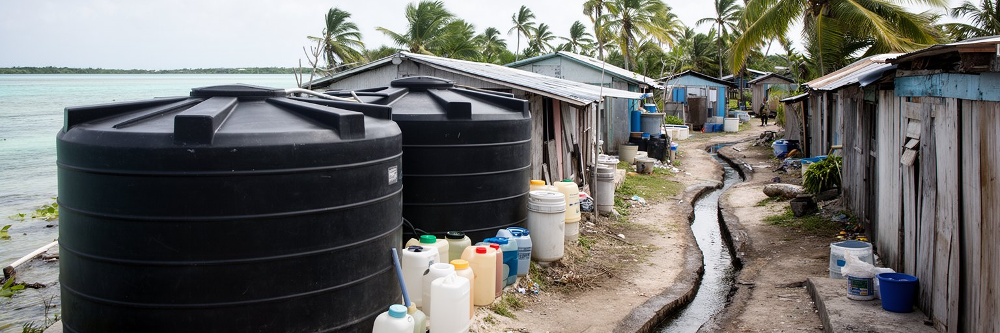
環礁の都市であるサウスタラワでは、水と衛生が最も基本的な都市課題になります。淡水は厚い帯水層ではなく、海水の上に浮く薄い地下水レンズや雨水に頼るため、過剰な汲み上げ、干ばつ、塩水化、汚染に弱いです。住宅が密集し、トイレ、井戸、排水、廃棄物の距離が近くなると、飲み水の安全はすぐ脅かされます。雨水タンクは家庭の安心を増やすが、屋根、貯水、清掃、乾季の長さに左右されます。給水時間が限られれば、家事、通学、仕事、病院、店の営業が影響を受けます。衛生問題は個人の習慣だけではなく、土地の狭さ、インフラ投資、維持管理、料金、教育、コミュニティの合意に関わる公共問題です。ラグーンの水質が悪化すれば、魚や貝、子どもの遊び場、観光の印象にも響きます。サウスタラワの水を読むことは、都市の持続可能性を読むことでもあります。海に囲まれていても飲める水は少ないという逆説が、首都の生活を支配しています。水源を守るには、保護区域、配管、トイレ、汚水処理、ごみ収集、住民参加を一体で進める必要があります。きれいな水が安定して届くことは、気候適応であり、保健政策であり、都市の尊厳の条件でもあります。水を待つ時間は、女性や子どもの負担として現れやすいです。配管の修理やタンクの清掃のような地味な仕事が、都市の健康を支えています。水質への信頼が落ちれば、人々は飲料を買い、家計はさらに圧迫されます。淡水の管理は貧困対策でもあります。
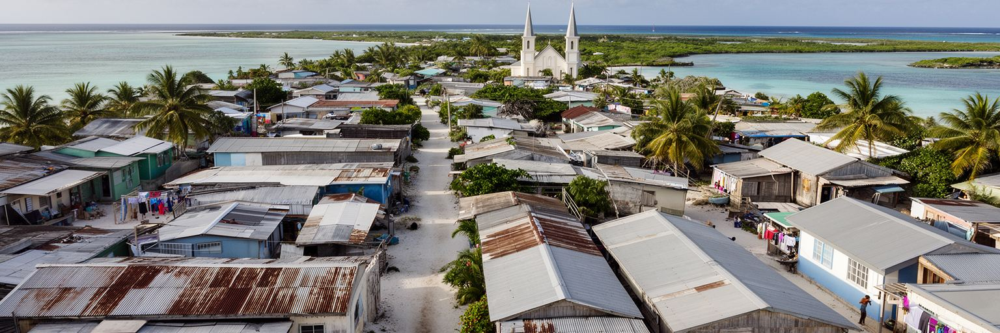
サウスタラワの過密は、単に人口が多いというだけではありません。使える土地が限られ、所有や相続の関係が複雑で、外島からの移住、進学、就職、医療目的の滞在が続くため、一つの敷地に多くの家族が暮らすことが珍しくありません。家は親族の土地に増築され、台所、寝る場所、井戸、トイレ、物置、海辺への通路が細かく調整されます。若者が独立した住まいを持つことは難しく、家賃、土地紛争、公共住宅の不足が将来設計を狭めます。過密は呼吸器感染、下痢性疾患、家庭内の緊張、学習環境、女性の家事負担にも関係します。外から見ると海辺の集落は穏やかに見えますが、住民にとっては私的空間の少なさと公共サービスの不足が重なる生活です。住宅を改善するには、単に新しい家を建てるだけでは足りません。水、衛生、排水、廃棄物、通学路、土地記録、災害時の避難、親族間の合意を同時に扱う必要があります。外島への分散を促す政策も、教育、医療、仕事が首都に偏る限り簡単ではありません。サウスタラワの住宅問題は、国家機能の集中そのものから生まれています。狭い家で暮らす家族の工夫は大きいが、その工夫に頼り続けるだけでは都市の健康は保てありません。家の中の混雑は、子どもの勉強、病人の休息、夫婦や親族の関係にも影響します。住まいは単なる建物ではなく、都市の福祉そのものです。海辺に近い低い土地では、高潮後の片付けも家族の負担になります。安全な住まいを増やす余地が少ないことが、問題をさらに難しくしています。
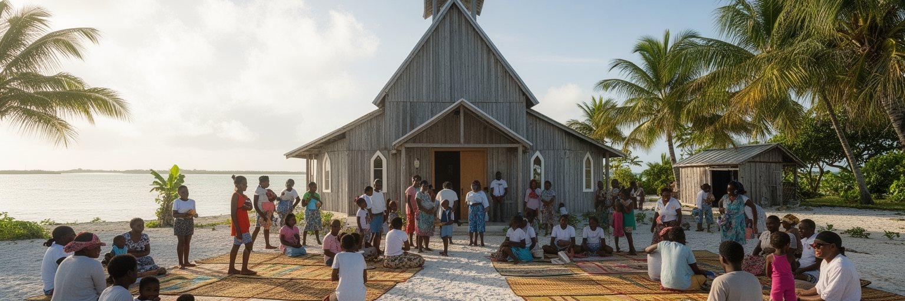
サウスタラワの社会を支える大きな柱は、教会、集会所、親族、学校です。キリスト教の礼拝は週の時間を区切り、歌、祈り、献金、青年会、女性会、葬儀、結婚、困窮時の支援を通じて都市の安全網になります。外島から来た人にとって、同じ島や教会のつながりは住まい、仕事、食事、情報を得る入口にもなります。集会所では地域の相談、踊り、行事、政治的な話し合いが行われ、狭い住宅では持ちにくい公共性を補います。信仰は単なる宗教施設の問題ではなく、過密な首都で互いに負担を分け合う仕組みです。もちろん、献金や行事の費用が家計を圧迫することもあり、共同体の期待は常に軽いものではありません。それでも教会や親族の場は、水不足、病気、失業、高潮、葬儀のような危機に直面した時、行政だけでは届かない支えを提供します。サウスタラワの文化を読むには、ラグーンの風景だけでなく、歌声、踊り、食事を分ける時間、集会の座り方を見る必要があります。都市化が進んでも、島の系譜と共同体の記憶は人々の行動を形づくります。信仰の場は、過去の島のつながりを首都の現在へ移す装置でもあります。そこに都市の柔らかな秩序があります。都市の問題が増えるほど、祈りの場は相談所にも避難場所にもなります。共同体は負担を求めるが、孤立を防ぐ力も持っています。歌と踊りは余暇ではなく、島の系譜を確かめ、若い世代へ共同体の作法を渡す時間でもあります。
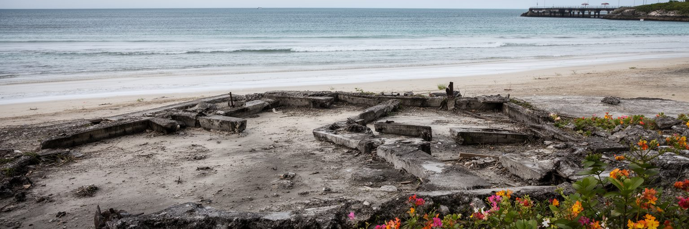
サウスタラワ西端のベシオは、港湾地区であると同時に、第二次世界大戦のタラワの戦いの記憶を抱える場所です。1943年、環礁の小さな島をめぐって激しい戦闘が行われ、多くの兵士と住民が戦争の暴力に巻き込まれました。現在のベシオには港、商店、住宅、学校、教会、交通の結節があり、戦争遺構や記念の場は日常の街路の中に点在します。記憶は観光資源である前に、島が外部の軍事戦略に組み込まれた歴史を考える手がかりです。太平洋戦争の地図では小さな点に見える場所でも、そこに暮らす人々にとっては土地、墓地、家族の記憶、海辺の生活がありました。戦跡を訪れる時には、兵器や上陸作戦だけでなく、島の住民が経験した占領、移動、喪失、その後の復興に目を向ける必要があります。ベシオの港が現在の輸入と物流を支える一方で、同じ海岸が戦争の記憶を残していることは、サウスタラワの時間の重なりをよく示します。戦争記憶を保存することは、過去を固定するためではなく、太平洋の島々が大国の歴史の中でどのように扱われたかを問い直すためでもあります。港の忙しさと静かな慰霊の場が隣り合うことに、この都市の複層性があります。子どもが通学し、貨物が積まれる同じ道に、戦争の痕跡が残ります。現在の生活が記憶を覆い隠すのではなく、毎日の往来の中で過去を受け止めています。保存には、地域の語りと訪問者の敬意が必要になります。
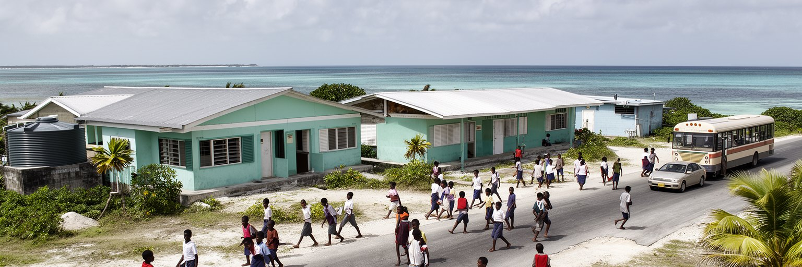
サウスタラワには中等教育、職業訓練、教員養成、大学関連施設、病院、行政機関が集まり、若者にとって進学と仕事を探す中心地になります。外島では教育や医療の選択肢が限られるため、家族は子どもを首都へ送り、親族宅に住ませることも多いです。学校へ通う道は、一本の幹線道路、混んだバス、暑さ、雨、高潮、家の手伝いに左右されます。進学は希望を広げる一方で、卒業後の仕事が十分にあるとは限りません。政府雇用や援助事業は限られ、若者は小売、建設、漁業、海外就労、教会活動、家族の世話の間で進路を探します。デジタル通信は外の世界を近くするが、通信費や機器、学習環境の差も大きいです。サウスタラワの若者問題は、教育熱心さの不足ではなく、狭い都市に人口と期待が集まり、労働市場がそれを受け止めきれないことにあります。学校は知識だけでなく、気候適応、海洋、保健、言語、移住の選択を考える場にもなります。若者が島に残るのか、外へ出るのか、戻るのかという判断は、個人の夢であると同時に国家の将来の問題です。首都の教室には、キリバスが海と世界の中でどう生きるかという問いが集まっています。部活動、教会の青年会、親族の手伝いは、進路を探す若者の社会的な訓練にもなります。小さな首都の教育は、島を越える移動の準備でもあります。就職先が少ない時、学びは国内に残る力にも、海外で働く力にもなります。教育の質は家族の移動戦略を左右します。
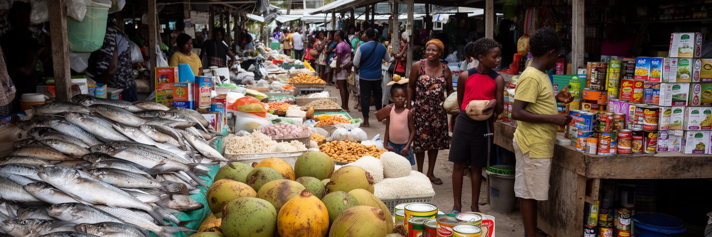
サウスタラワの食卓は、魚、ココナツ、パンノキ、タロ、米、缶詰、麺、砂糖、輸入飲料が混ざり合っています。外島では自給的な食文化が残る一方、首都では土地が狭く人口が多いため、輸入食品と現金収入への依存が強いです。市場や小店では、船で届く米や缶詰、地元の魚、野菜、揚げ物、日用品が並びます。輸送の遅れ、燃料価格、為替、港の混雑は、食費へすぐ反映されます。安く保存しやすい食品は家計を助けるが、栄養、糖尿病、肥満、子どもの健康という課題も生みます。沿岸の魚は重要なタンパク源ですが、人口集中、ラグーンの水質、気候変化、漁獲圧に左右されます。サウスタラワの食を読むには、伝統料理か輸入食品かという単純な対立では足りません。家族は現金、親族からの分け前、海で獲れる魚、教会行事の食事、店の掛け売りを組み合わせて日々をつなぎます。食料安全保障は、農地だけでなく港、冷蔵、衛生、収入、健康教育、海の管理の問題です。ラグーンの魚と輸入米が同じ皿に乗る時、そこには環礁都市の現代性が表れます。海の豊かさだけでは、過密な首都の食卓を安定させられません。輸入への依存を減らす工夫と、現実的な物流の強化が同時に必要になります。食の変化は、単に好みの問題ではなく、土地不足と現金経済の結果です。小さな店の棚は、世界の輸送網と家庭の健康を同時に映します。学校給食や保健教育も、都市の食を支える重要な政策になります。
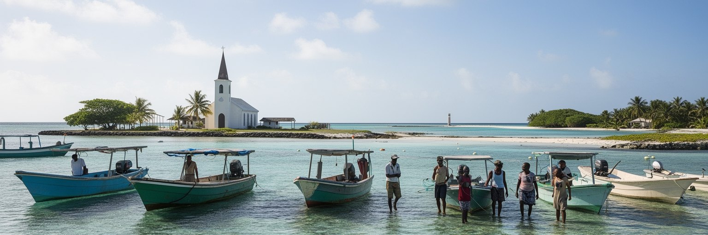
サウスタラワの観光は、大規模なリゾート消費よりも、ラグーン、戦跡、教会、市場、集会文化、外島への移動を通じてキリバスを理解する旅に近いです。ボンリキ空港は国の玄関口であり、ベシオ港や国内便は外島へ向かう生活の通路でもあります。旅行者は透明な水や広い空に惹かれるが、首都の魅力は美しい海だけではありません。限られた土地に国家、家族、信仰、気候危機が重なる現実を見て、外島との違いを考えることが重要になります。観光が地域に利益をもたらすには、地元ガイド、小規模宿泊、手工芸、食堂、交通、文化行事への敬意が欠かせません。写真を撮る時には、住宅、墓地、礼拝、子ども、戦跡への配慮が必要です。過密やごみ、水質の問題を、珍しい光景として消費してはなりません。サウスタラワは、外島へ出る前の通過点ではなく、キリバスの現在を最も濃く見せる場所です。観光の再生は、環境管理、廃棄物、歩行環境、案内、文化施設、戦争記憶の保存と結びつきます。訪問者が海の美しさと生活の制約を同時に理解できれば、首都への滞在は単なる南国の旅ではなく、太平洋の小島嶼国家が直面する課題を学ぶ時間になります。外島へ渡る船を待つ時間にも、首都の生活が見えます。市場での買い物や教会の歌声は、旅の背景ではなく都市そのものの経験です。観光は、住民が使う場所を尊重して初めて成り立ちます。小さな支出が地域の店や案内人へ届く形が望ましいです。
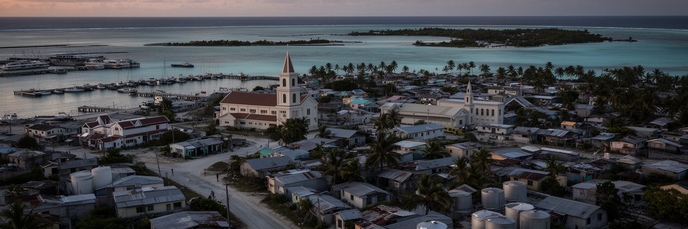
サウスタラワは、都市の大きさではなく、抱えている問いの大きさによって重要な場所です。細い環礁に、国家行政、港、空港、学校、病院、教会、市場、戦争記憶、外島からの移住、気候危機、国際援助が集中します。ここでは、海は美しい背景ではなく、食料、交通、境界、脅威、記憶、外交の場です。土地が少ないことは、住宅、衛生、水、道路、墓地、公共施設の選択肢を狭め、同時に住民同士の距離を近くします。気候変動は世界政治の議題である前に、家の前の波、塩辛くなる水、通学路の冠水として現れます。サウスタラワを読む時、沈む島という一つのイメージに閉じ込めてはいけありません。人々は祈り、働き、学び、魚を売り、家族を支え、外島と連絡を取り、必要なら海外へ向かう選択も考えています。首都の課題は深刻ですが、そこには都市を維持する知恵と共同性もあります。大切なのは、気候危機、過密、輸入依存、国家機能の集中を別々に見ず、一本の環礁道路の上で結びつけて理解することです。サウスタラワは、小さな島の首都でありながら、二十一世紀の都市が海、移動、国家、環境正義をどう扱うかを問いかける場所です。道路を走るバス、港に入る船、教会に集まる家族、雨水タンクの列は、すべて同じ問いにつながります。ここで都市を読むことは、地図の小さな点から世界の責任を見ることでもあります。